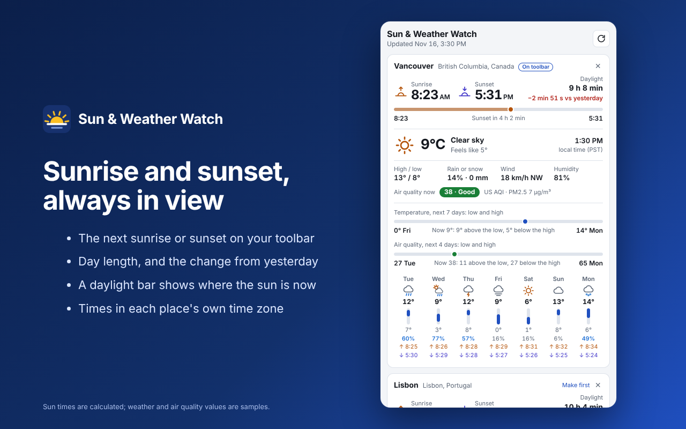
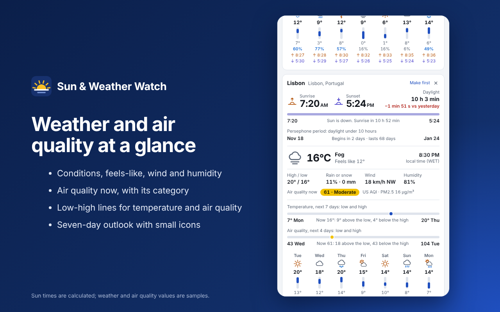
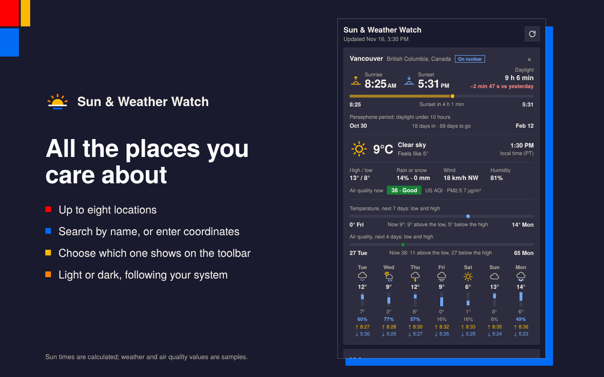

Sun & Weather Watch
The next sunrise or sunset on your browser toolbar, and the weather and air quality for every place you care about one click away.
Free in the stores: Chrome Web Store Microsoft Edge Add-ons

What it does
- Shows today's sunrise and sunset, the length of the day, and how it compares with yesterday.
- Shows the Persephone period for each place: the part of the year with less than 10 hours of daylight, with its first and last dates, how many days in you are, and how many days are left.
- Puts the next sunrise or sunset for your first location on the toolbar badge.
- Shows the weather now: conditions, temperature, feels-like, high and low, rain or snow, wind and humidity.
- Shows the air quality now, with its category, on the US or the European index.
- Draws two low-high range lines: temperature over the next seven days, and air quality over its forecast.
- Lays out the next seven days as small icons with highs, lows, chance of rain or snow, and sun times.
- Keeps up to eight locations, found by name or entered as coordinates.
- Offers metric or imperial units and a 12-hour or 24-hour clock.
- Follows your system's light or dark mode.


In the pictures, sun times are calculated and the weather and air quality values are samples.
Private by design
There is no account and no sign-in. Your locations and settings stay in your browser on your own device. The extension does not read your device's location; it only knows the places you add. Only the coordinates of those places are sent to the weather service. Read the privacy policy.
Good to know
- Forecasts are model output from Open-Meteo and can be wrong. Sun times are calculated for the coordinates and do not account for hills or buildings.
- Air quality is a model estimate from the Copernicus Atmosphere Monitoring Service, not a reading from a monitor near you. Its forecast reaches about five days, four in Europe.
- The Persephone period is calculated from the coordinates of the place. Its first and last dates can be a day off. Places near the equator have no Persephone period.
- The toolbar badge updates only while the browser is running.
- There are no severe-weather alerts. Do not rely on this extension for safety decisions.
- Sun & Weather Watch is an independent project and is not affiliated with Open-Meteo or Copernicus.
Data sources
Weather data by Open-Meteo.com, licensed under CC BY 4.0. Air quality data from CAMS, the Copernicus Atmosphere Monitoring Service, via Open-Meteo.
Support
Questions or problems: pavwerk@gmail.com